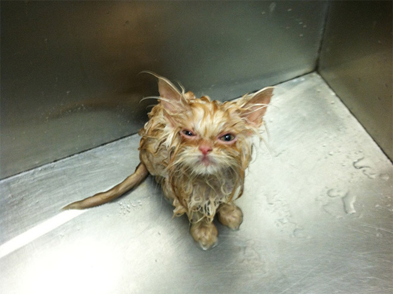

I am a simple boy from Kenya
Hello there, my name is Otile Brown and I am a Kenyan guy who lives in Finland. I am currently studying and hope to finish soon before I am too Finnished. Get it? Hahaha!
Okay, I will teach you a few things about Kenya where I am from About this weird country you've never heard of
But first a little bit about the even weirder country that I live in.
I have absolutely no idea where to start with this country called Finland, there is so much to talk about, but I would like to tell you a little about a great sport they call eukonkanto. A great many people have tried this sport but failed. Only Finnish couples with the spirit of sisu have succeeded in it.
Just remember the eukonkanto makes wives look like this!
About Finland
Some of the best tourist destinations in Finland.
- Northern lights
- More forest and water than anywhere else in Europe
- The origin and home of Santa Claus
- 3 million saunas
- Best skiing resorts
- Cleanest air in Europe
- An experience of the Worlds happiest country
About Kenya
There are a lot of things about my home country too
- Best long distance runners
- Great wildlife
- Second highest altitude in Africa
- The great wilderbeast migration/ Among the 8 wonders of the World
- Great sandy beaches
- Warm welcoming people